2K · 약 3분 4초 · 이동·탐색·탈출 연결 보강 · 상황 설명 6장
출발과 약 발견 사이에 이동·도착 설명 5초와 약국 탐색 2초를 넣었습니다. 휴대폰 유인의 결과와 거미줄 탈출 방법을 설명하고, 출발 전에 이미 공중에 있던 장면을 준비→출발 순서로 정리했습니다. 원본 대사·효과음과 필요한 구간의 BGM은 유지합니다. 나레이션은 없습니다.
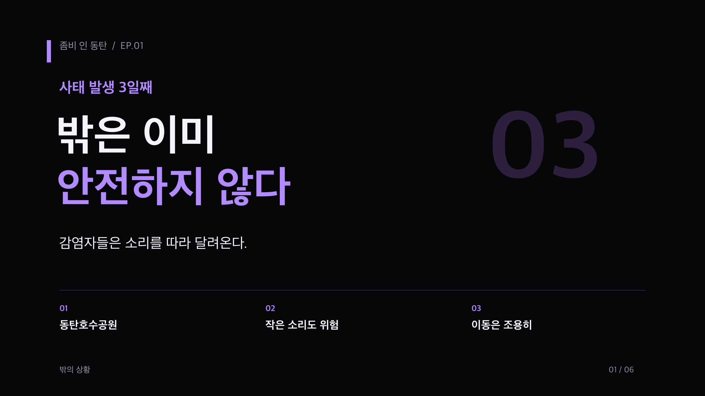
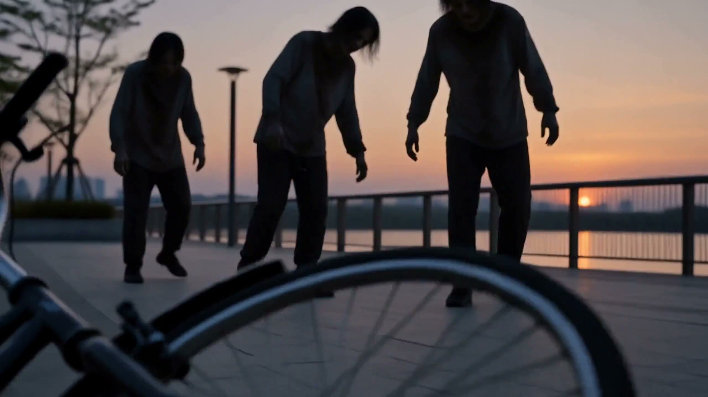
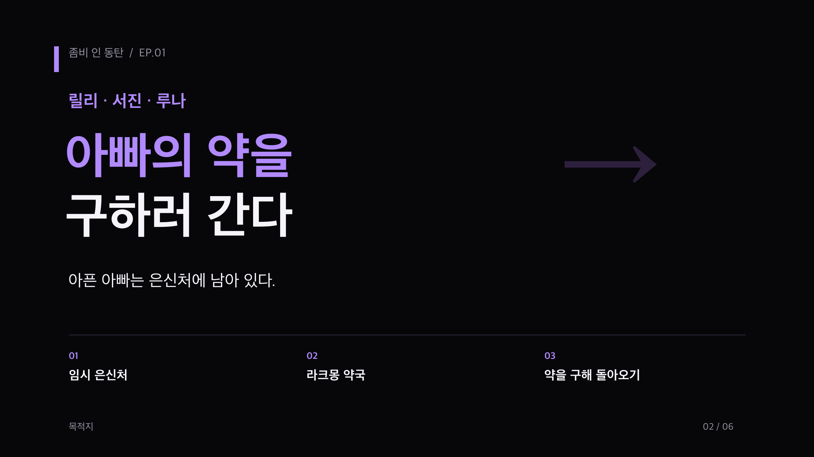
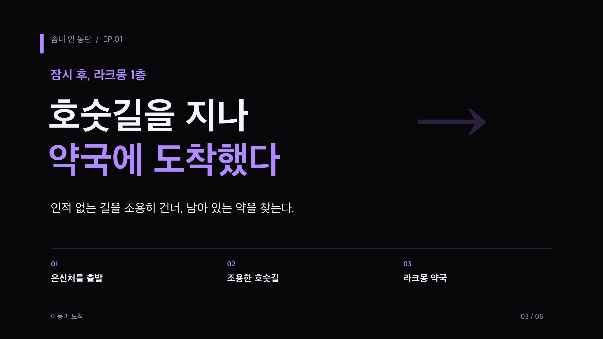
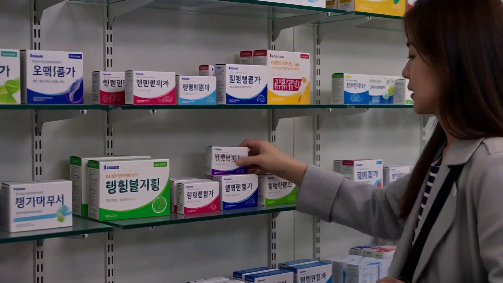
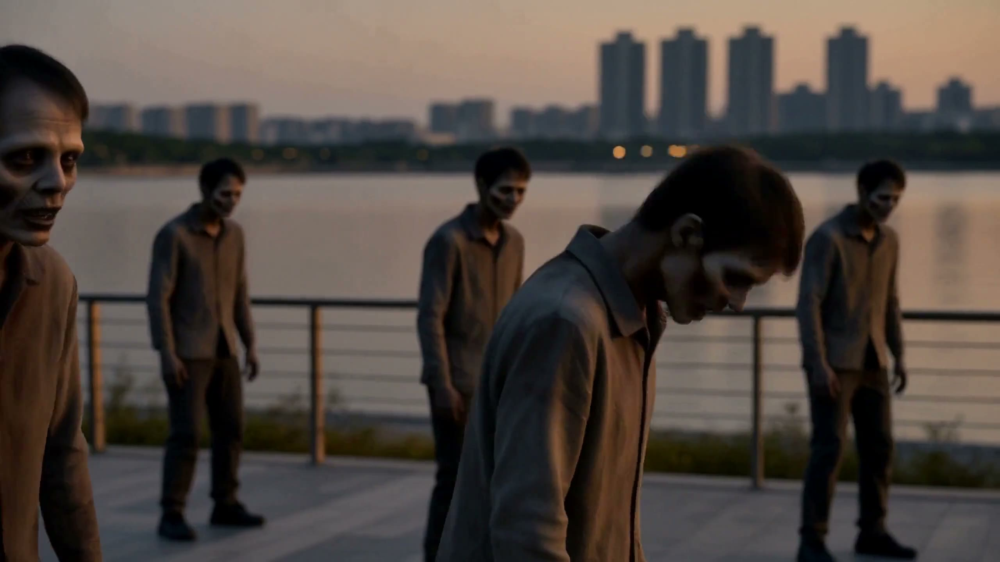
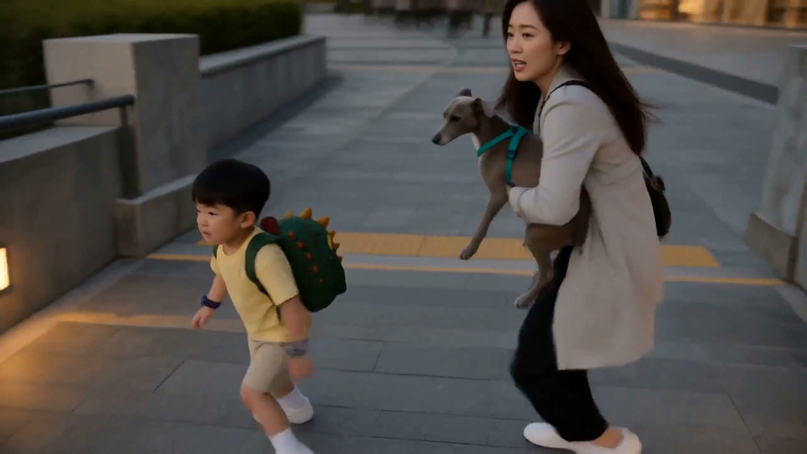
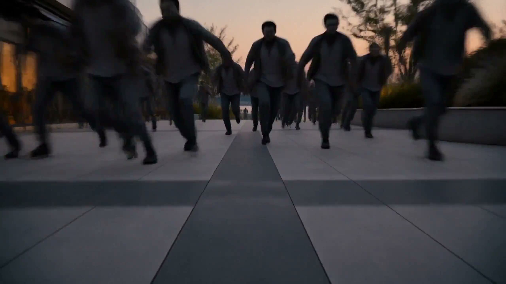
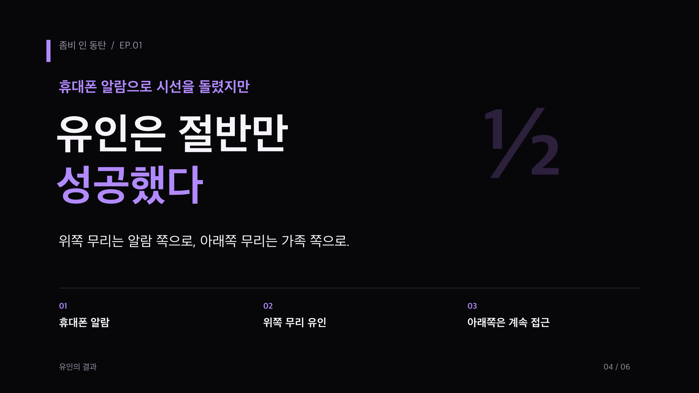
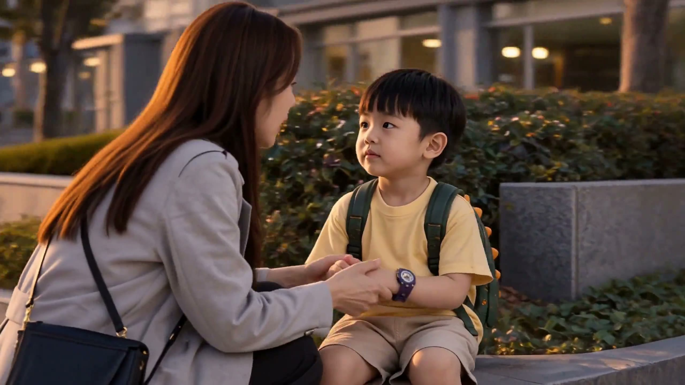
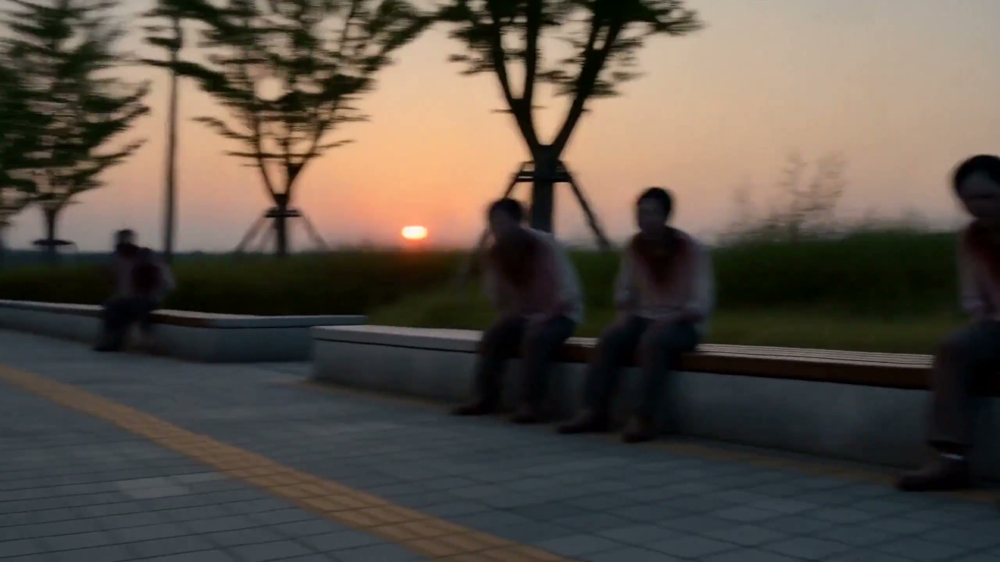
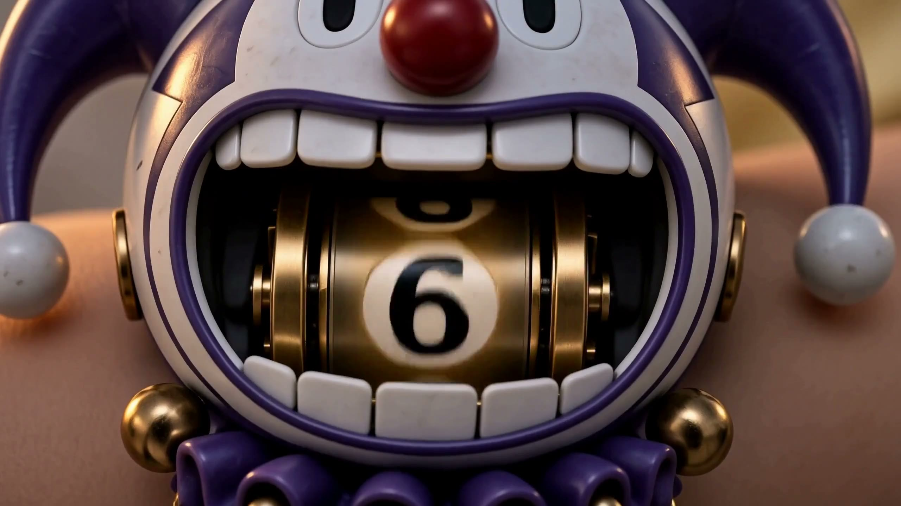
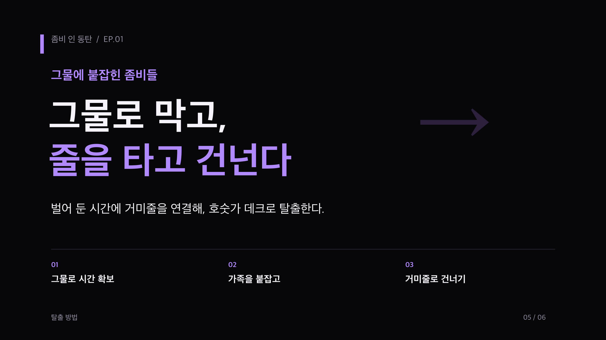
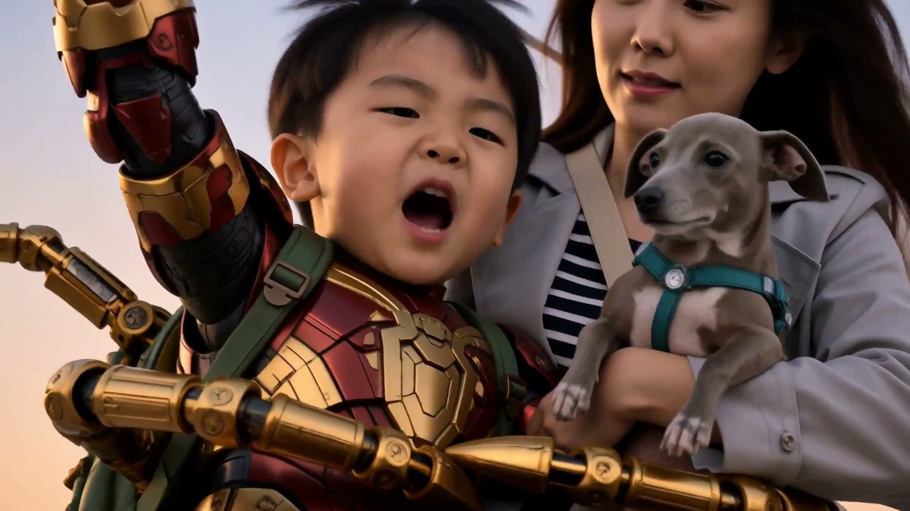
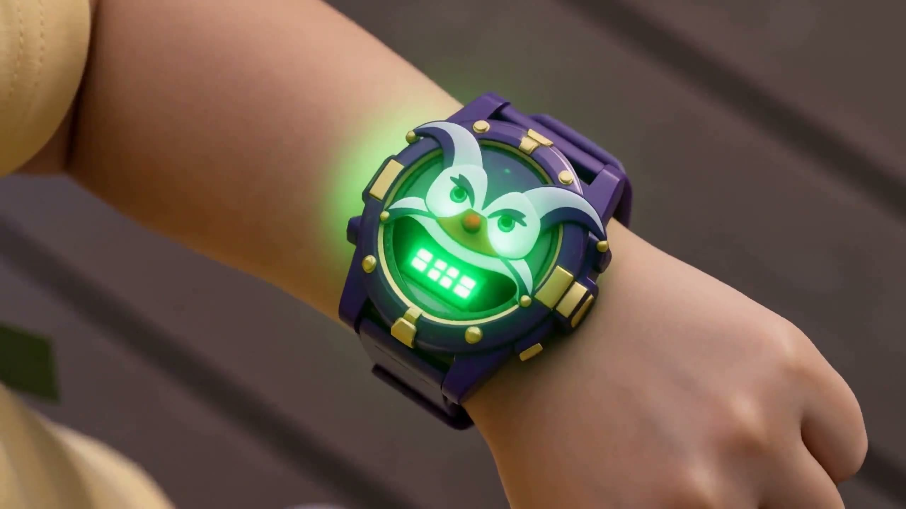
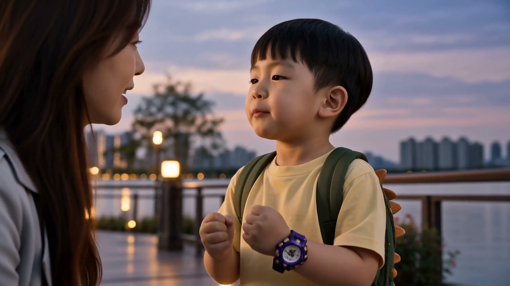
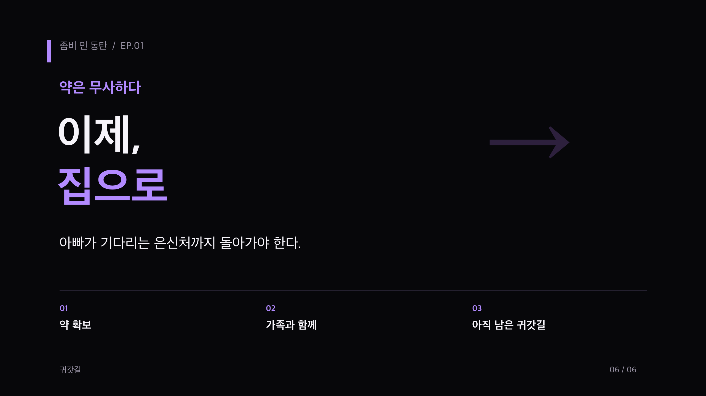